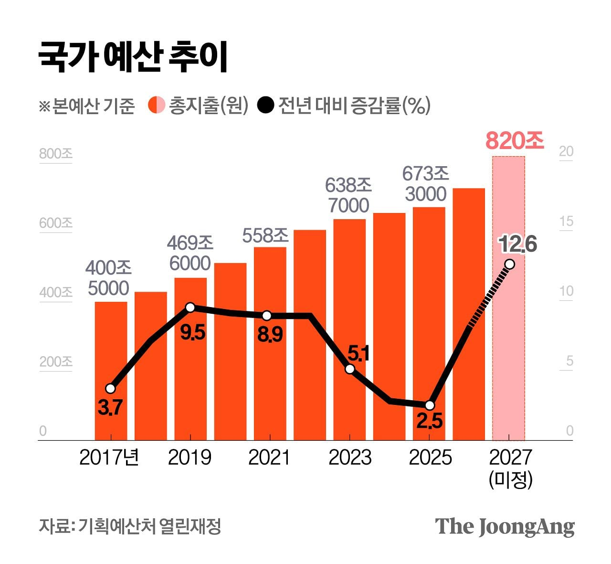

한민족 역사상 이정도의 전성기는 없었을듯

한민족 역사상 이정도의 전성기는 없었을듯
짜피 내후년부터 삼하닉스가 지금처럼돈벌까?
에잉. 한민족 역사상이라니
조선초중기나 그전 고려나 통일신라 고구려 전성기등엔 10위권 이내 항상했었던거 같은데
오히려 일본이 역사상 말도 안되는 수준으로 유례없는 전성기지. 도쿠가와 이전까진 한반도를 넘어선적이 없는데
일본도 원래 체급 찾은 거지. 그동안 봉건제 하면서 세금 80% 가까이 삥뜯으면서 민간 짓누르던거 이제와서 올라올 자리까지 온거라고 봄. 근데, 그걸 염두해서 미래설계를 해야 하는 정치인들이 뉴타입 봉건제를 시행하고, 사업가들은 현실에 안주한 탓에 30년동안 정체기에 있는 거고.
하지만 국민연금 익절도못하고 다털렸죠?
부정부패 횡령으로 탕진. 이를 조사하는 세금으로 탕진
반도체 초과이익 국민배당을 시행하라!!! 왈왈!!